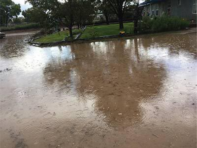

Soda Springs, Idaho
Five Day Forecast
| °F | °F | °F | °F | °F |
Upcoming Town Events
Weather News
Welcome to the Soda Springs home page. Here, you will find a five-day forecast, today's
temperature as well as humidity and wind chill. We will always alert you when there is stormy
weather, with updates on road conditions and closures.
Last week's storm inundated Soda Springs with 3 inches of rainfall in 2 hours, which caused mild
flooding in some neighborhoods. Be prepared for the moisture to turn to snow soon, as there is
an arctic blast moving our direction. The arctic blast is currently causing major problems in
the eastern part of the country in the form of a nor'easter. Stay tuned for more weather news.
Welcome to the Soda Springs weather home page. Here, you will find a five-day forecast, today's
temperature as well as humidity and wind chill. We will always alert you when there is stormy
weather, with updates on road conditions and closures.
Last week's storm inundated Soda Springs with 3 inches of rainfall in 2 hours, which caused mild
flooding in some neighborhoods. Be prepared for the moisture to turn to snow soon, as there is
an arctic blast moving our direction. The arctic blast is currently causing major problems in
the eastern part of the country in the form of a nor'easter. Stay tuned for more weather news.